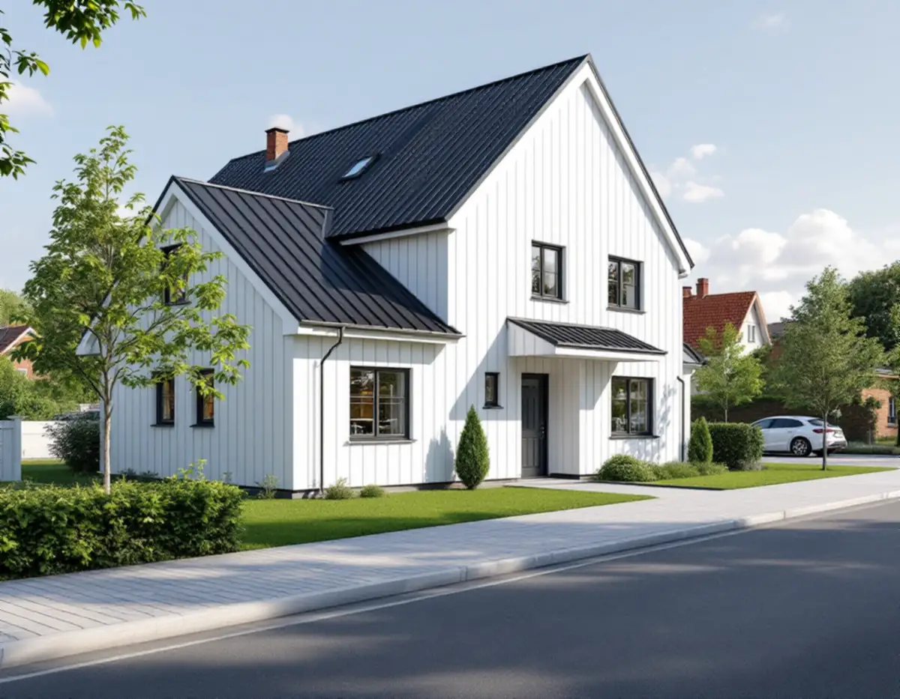
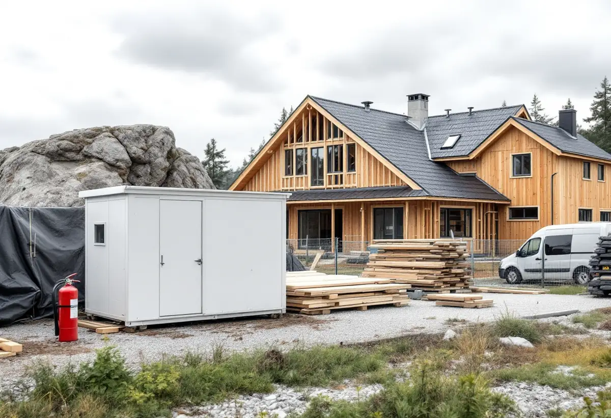

Platsbesök
Vi tittar på tomten, berget, gatan utanför och var utfarten kan ligga.
Botkyrka har 12 582 bostäder i småhus enligt SCB:s statistik för 2025. Den som bygger ett nytt hus här möter både bygglovets krav och kommunens regler för gatan utanför: utfarten, transporterna och arbetsplatsen. Geal Entreprenad AB bygger nya hus och tillbyggnader som total entreprenad och samordnar allt från ritningar till slutbesked.

Ett nytt en- eller tvåbostadshus kräver bygglov i Botkyrka, och innan bygget får börja ska det ha hållits ett tekniskt samråd och getts ett startbesked. Huset får inte tas i bruk förrän slutbesked finns. Kommunens checklista visar vad som ska skickas med, och ritningarna ska vara fackmannamässiga, skalenliga och högst i A3-format.
Situationsplanen görs på en fullständig nybyggnadskarta i skala 1:400. Huset ska vara måttsatt med minst två avstånd i rät vinkel till tomtgränsen, och golvhöjden anges som en plushöjd. Fasad-, plan- och sektionsritningar görs i skala 1:100. Fasaderna ska visa marknivåer, takvinkel i grader, material och kulörer, och planritningen över entréplanet ska vara möblerad och visa att planet är tillgängligt för personer med nedsatt rörelseförmåga.
Till ett nytt hus hör också en markplaneringsritning i 1:400 som visar in- och utfart, parkering, gamla och nya marknivåer, murar, plank, dagvatten och avfallshantering. Kommunen anger att en kontrollansvarig ska anmälas, att utstakning och lägeskontroll krävs och att strandskyddsdispens behövs om tomten ligger inom strandskyddat område.

Saknar tomten in- och utfart, eller ska den flyttas, ansöker du om det hos kommunen. Den del som hamnar på gatumark, parkmark eller annan allmän plats byggs som regel av kommunens upphandlade entreprenör, och fastighetsägaren står för kostnaden efter en syn på plats. Vid enklare förutsättningar kan fastighetsägaren få anlägga infarten själv i samråd med kommunens gatuingenjör, som då godkänner den vid en slutbesiktning.
Kraven är konkreta. En fastighet får ha högst en in- och utfart, och murar, plank och häckar intill den får vara högst 0,8 meter för att sikten ska bli god. Det ska finnas sikttrianglar på minst 2,5 gånger 2,5 meter, och avståndet till övergångsställe och korsning ska vara minst 10 meter. Backning över cykelbana eller ut på huvudgata tillåts inte.
På den allmänna platsen får infarten vara högst 3,0 meter bred och ska följa befintliga marknivåer. Ett vägdike får inte fyllas igen. Fastighetsägaren ska lägga en trumma under infarten, som regel 200 millimeter i diameter, och kommunen ska godkänna hur dagvattnet leds bort. Utfarten ritar vi därför in redan i situationsplanen, så att den stämmer med både bygglovet och gatan.
En APD-plan, arbetsplatsdispositionsplan, är en ritning som visar var containrar, bodar, upplag, ledningar, första hjälpen, samlingsplats, brandsläckare och brandfarliga varor finns på arbetsplatsen. I Botkyrka ska den även lämnas till Södertörns brandförsvarsförbund.
Transporterna till tomten är en egen fråga. Kommunens gator har oftast bärighetsklass 2, och det finns inga vägar med bärighetsklass 4 i kommunen. Många lokala vägar är inte byggda för stora fordon, och kommunen skriver att även fordon längre än 12 meter kan ha svårt att komma fram. Den planerade färdvägen kan stämmas av med kommunen, och för tunga, långa eller breda transporter krävs dispens. Ska det grävas i gatan för ledningar söks schakttillstånd via e-tjänsten ISY Road, och ärendet går via ledningsägarens projektledare.
Står huset på berg kan grunden behöva sprängas fram. Det kräver tillstånd från polisen, som prövar om den som ska spränga är lämplig och har tillräcklig kunskap. Sprängfirman ska kontakta en besiktningsfirma som avgör vilka hus i närheten som ska besiktigas. Kommunen nämner en rekommendation om att hus inom 50 meter från sprängplatsen bör besiktigas, men vilka som blir aktuella beror på mark, grund och material.
En geoteknisk undersökning fastställer jord-, berg- och grundvattenförhållanden, bland annat genom borrprover, och ger underlag för grundläggningen. När huset står på plats görs en lägeskontroll, en kontrollmätning av att det placerats enligt bygglovet, om startbeskedet kräver det. Den kan göras av kommunens enhet för geografisk information.
Vill du hellre bygga ut det hus du har, läs om tillbyggnad eller om snickare i Botkyrka för mindre byggen på tomten. Hela arbetssättet beskrivs under byggfirma.
Vi tittar på tomten, berget, gatan utanför och var utfarten kan ligga.
Situationsplan, markplanering och ritningar tas fram efter kommunens checklista.
Mark, grund, byggnad och installationer redovisas som egna poster.
Ansökan, utfartsansökan och tekniskt samråd före startbeskedet.
APD-plan, transporter och eventuell sprängning planeras innan bygget börjar.
Kontrollmätning, slutsamråd och genomgång med dig.
Ett helt nytt hus ger inget rotavdrag. En tillbyggnad på ett befintligt hus kan göra det, om den sitter ihop med ytterväggen till minst 75 procent på någon sida eller har en dörr emellan, och sprängarbete som krävs för en utbyggnad räknas också. Är huset yngre än fem år ger ombyggnad och tillbyggnad inget avdrag.
Avdraget är 30 procent av arbetskostnaden, högst 50 000 kronor per person och år och högst 75 000 kronor tillsammans med rutavdrag. Material, resor och bygglovshandlingar ger inget avdrag. Vi drar avdraget direkt på fakturan.
Berg och markförhållanden, grundläggning, husets storlek och installationer väger tyngst. Utfarten på allmän plats och schakt i gatan debiteras av kommunen och ingår inte i vår offert. Efter ett gratis platsbesök får du ett skriftligt kostnadsförslag.
Total entreprenad för villan.
Byggfirma →Takbyte, takbesiktning och plåtarbeten.
Takläggare i Botkyrka →Tullinge, Uttran och Tumba.
Takrenovering i Botkyrka →Kartlagren, checklistan och vattnet.
Attefallshus i Botkyrka →Flytt av badrum, stammar och frånluft.
Badrumsrenovering i Botkyrka →Fönstertyper per epok i Botkyrkas villor.
Fönsterbyte i Botkyrka →Kataloghus, källargolv och trägolv.
Golvläggare i Botkyrka →Kök i villor och radhus, för att bo kvar.
Köksrenovering i Botkyrka →Tidstypiska kulörer från 1960-tal till gamla byar.
Målare i Botkyrka →Rännor, stuprör och plåttak i Botkyrka.
Plåtslagare i Botkyrka →Altan, plank och förråd i villaområdena vid järnvägen.
Snickare i Botkyrka →Material, solpaneler och takkupor.
Takbyte i Botkyrka →Ny tapet på träfiberskivor och gamla lager.
Tapetsering i Botkyrka →Tullingehuset i omgångar.
Totalrenovering i Botkyrka →